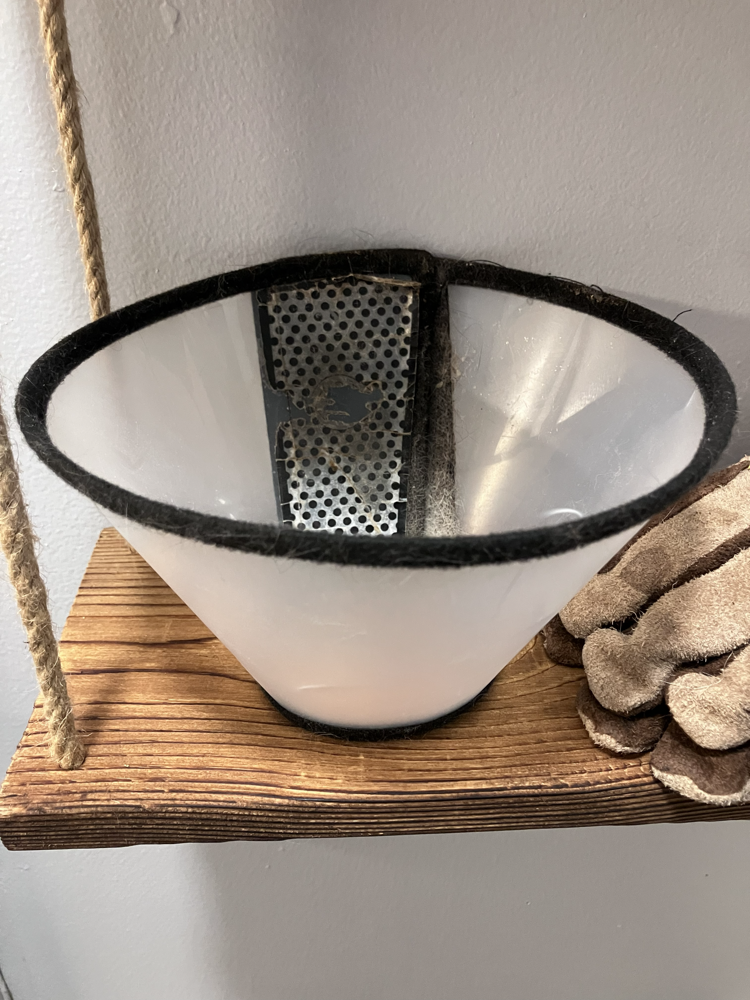
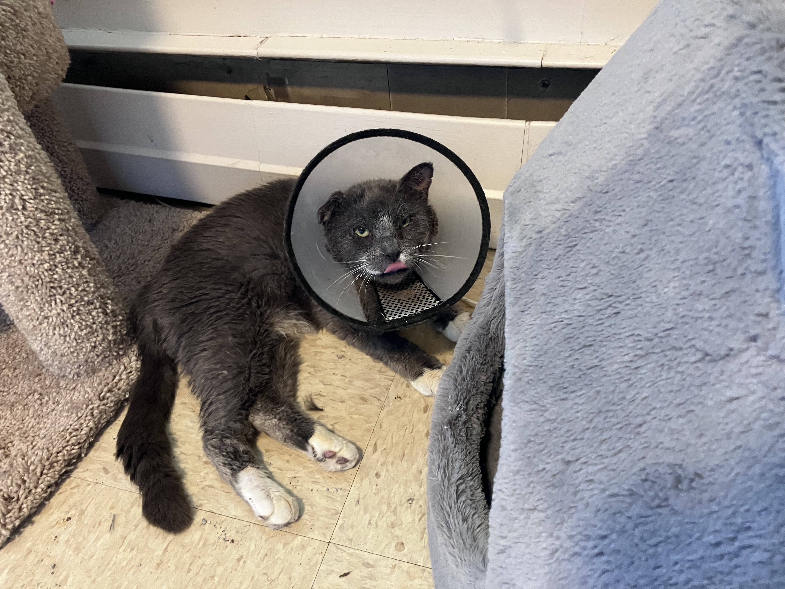
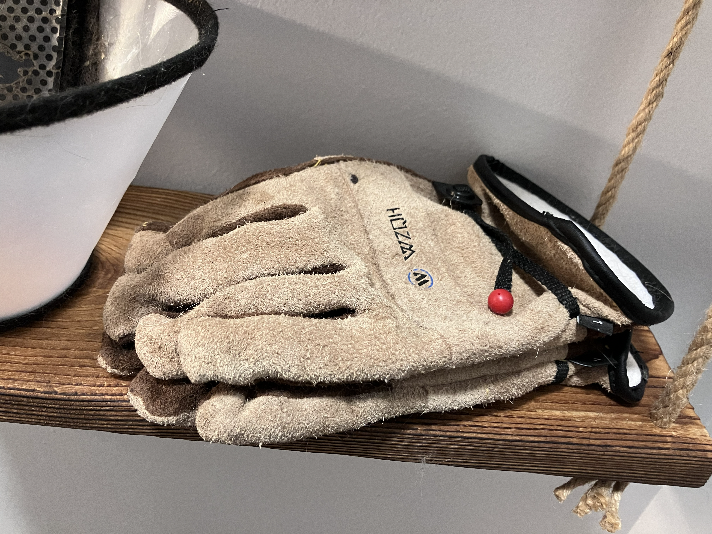
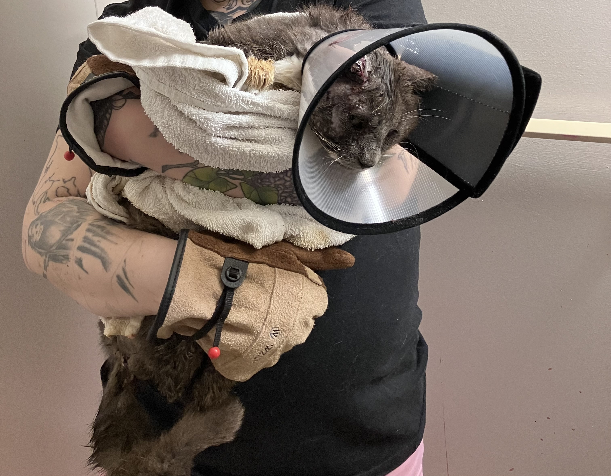
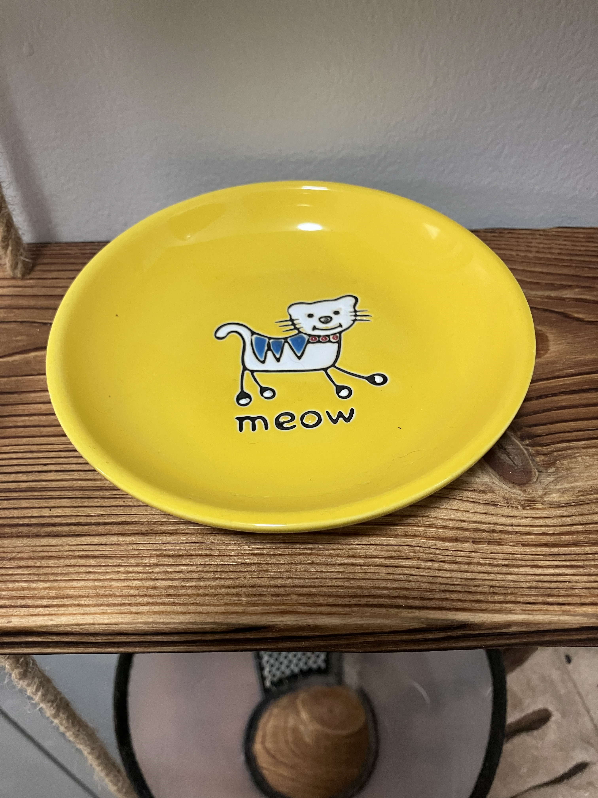
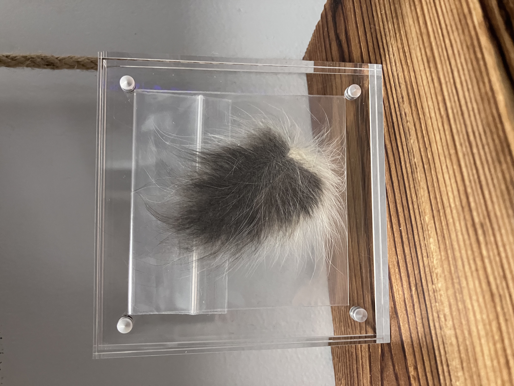
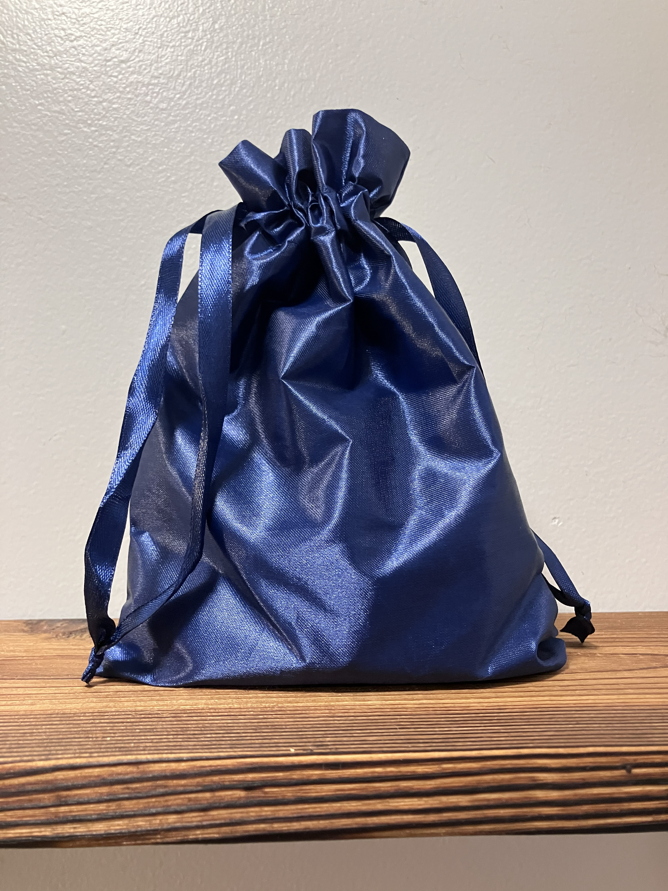
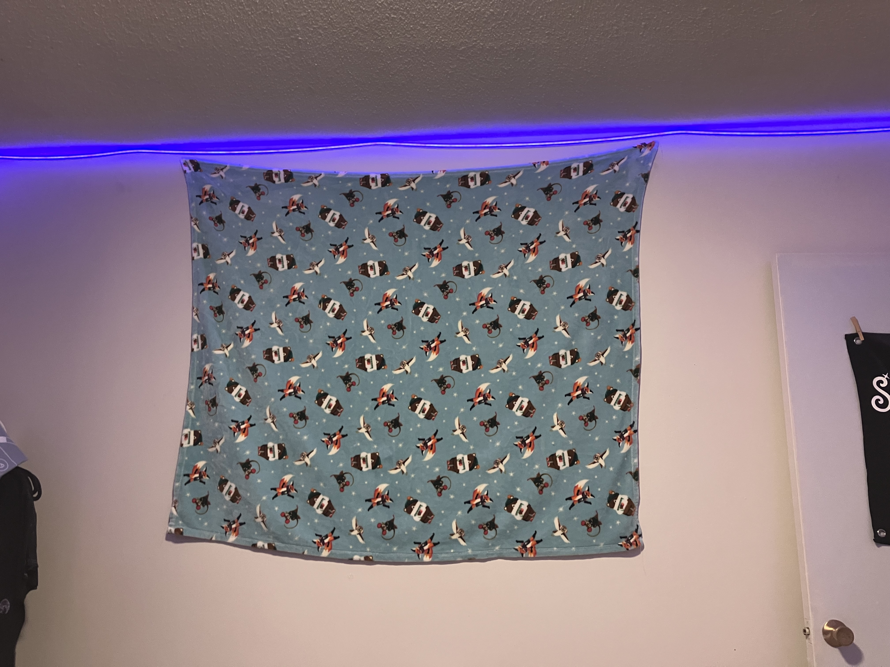
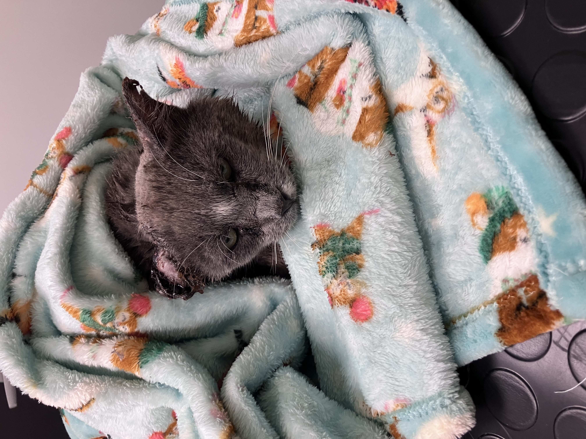

Fraggle Relics
The objects preserved here belong to Fraggle's story. Some were part of his life. Others became part of the journey that followed. Each one carries a piece of the history that made the Archives possible.
The Cone

The indignity. The bravery. The unmistakable symbol of a tiny cat who was trying very hard to heal.

The Gloves

The gloves used while caring for Fraggle — preserved because sometimes the physical objects connected to a life matter just as much as the photographs and stories.

Emergency Creamy

A highly regulated emergency resource, maintained according to Archive protocol and deployed only when circumstances become sufficiently creamy.
The Sacred Yellow Plate

An artifact of considerable importance and questionable explanation. Its history is carefully preserved within the Archives.
The Fur Clipping

A small clipping of Fraggle's fur, preserved as a physical reminder of the little grey cat at the heart of the Archives.
Sacred Ashes

A memorial artifact preserved with care and reverence.
Some things are kept because they are historically important. Others are kept because someone mattered.
The Lucky Blanket

The blanket used during Fraggle’s twice-daily care routines, preserved as a reminder of the care and love that surrounded him.
